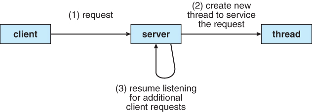
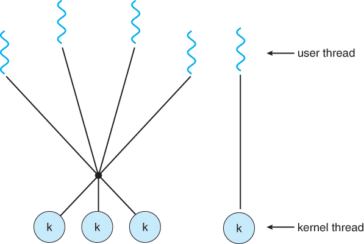
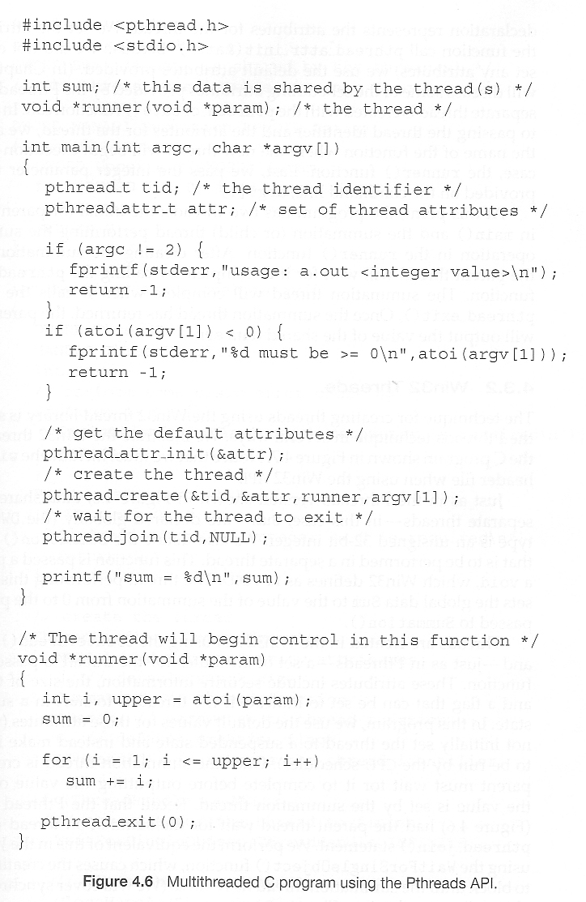
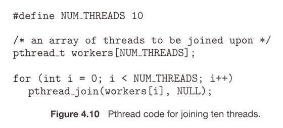
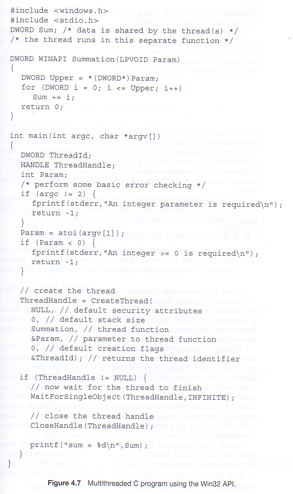
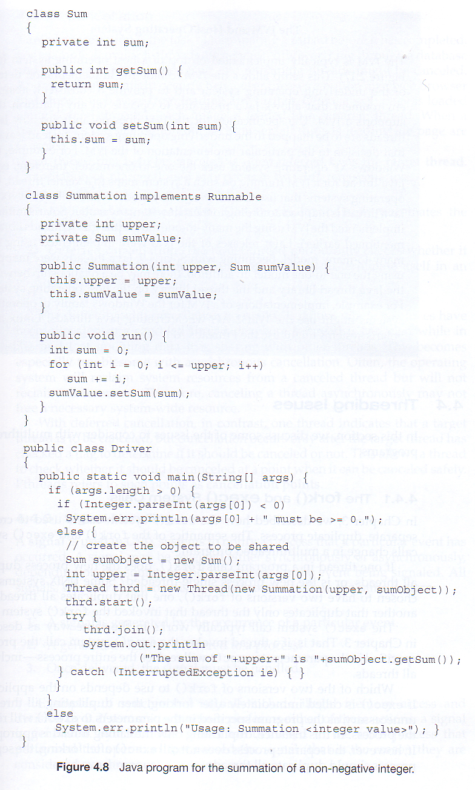
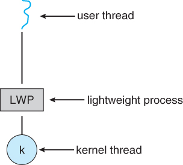
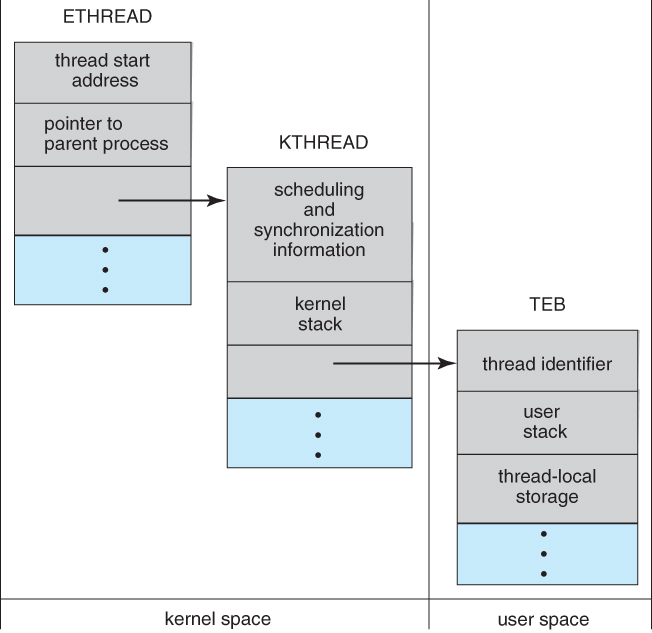

Figure 4.1 - Single-threaded and multithreaded processes
Figure 4.1 - Single-threaded and multithreaded processes
4.1.1 Motivation
- Threads are very useful in modern programming whenever a process has multiple tasks to perform independently of the others.
- This is particularly true when one of the tasks may block, and it is desired to allow the other tasks to proceed without blocking.
- For example in a word processor, a background thread may check spelling and grammar while a foreground thread processes user input ( keystrokes ), while yet a third thread loads images from the hard drive, and a fourth does periodic automatic backups of the file being edited.
- Another example is a web server - Multiple threads allow for multiple requests to be satisfied simultaneously, without having to service requests sequentially or to fork off separate processes for every incoming request. ( The latter is how this sort of thing was done before the concept of threads was developed. A daemon would listen at a port, fork off a child for every incoming request to be processed, and then go back to listening to the port. )

Figure 4.2 - Multithreaded server architecture4.1.2 Benefits
- There are four major categories of benefits to multi-threading:
- Responsiveness - One thread may provide rapid response while other threads are blocked or slowed down doing intensive calculations.
- Resource sharing - By default threads share common code, data, and other resources, which allows multiple tasks to be performed simultaneously in a single address space.
- Economy - Creating and managing threads ( and context switches between them ) is much faster than performing the same tasks for processes.
- Scalability, i.e. Utilization of multiprocessor architectures - A single threaded process can only run on one CPU, no matter how many may be available, whereas the execution of a multi-threaded application may be split amongst available processors. ( Note that single threaded processes can still benefit from multi-processor architectures when there are multiple processes contending for the CPU, i.e. when the load average is above some certain threshold. )

Figure 4.3 - Concurrent execution on a single-core system.

Figure 4.4 - Parallel execution on a multicore system
4.2.1 Programming Challenges ( New section, same content ? )
- For application programmers, there are five areas where multi-core chips present new challenges:
- Identifying tasks - Examining applications to find activities that can be performed concurrently.
- Balance - Finding tasks to run concurrently that provide equal value. I.e. don't waste a thread on trivial tasks.
- Data splitting - To prevent the threads from interfering with one another.
- Data dependency - If one task is dependent upon the results of another, then the tasks need to be synchronized to assure access in the proper order.
- Testing and debugging - Inherently more difficult in parallel processing situations, as the race conditions become much more complex and difficult to identify.
4.2.2 Types of Parallelism ( new )
In theory there are two different ways to parallelize the workload:
- Data parallelism divides the data up amongst multiple cores ( threads ), and performs the same task on each subset of the data. For example dividing a large image up into pieces and performing the same digital image processing on each piece on different cores.
- Task parallelism divides the different tasks to be performed among the different cores and performs them simultaneously.
In practice no program is ever divided up solely by one or the other of these, but instead by some sort of hybrid combination.
4.3.1 Many-To-One Model
- In the many-to-one model, many user-level threads are all mapped onto a single kernel thread.
- Thread management is handled by the thread library in user space, which is very efficient.
- However, if a blocking system call is made, then the entire process blocks, even if the other user threads would otherwise be able to continue.
- Because a single kernel thread can operate only on a single CPU, the many-to-one model does not allow individual processes to be split across multiple CPUs.
- Green threads for Solaris and GNU Portable Threads implement the many-to-one model in the past, but few systems continue to do so today.
Figure 4.5 - Many-to-one model4.3.2 One-To-One Model
- The one-to-one model creates a separate kernel thread to handle each user thread.
- One-to-one model overcomes the problems listed above involving blocking system calls and the splitting of processes across multiple CPUs.
- However the overhead of managing the one-to-one model is more significant, involving more overhead and slowing down the system.
- Most implementations of this model place a limit on how many threads can be created.
- Linux and Windows from 95 to XP implement the one-to-one model for threads.
Figure 4.6 - One-to-one model4.3.3 Many-To-Many Model
- The many-to-many model multiplexes any number of user threads onto an equal or smaller number of kernel threads, combining the best features of the one-to-one and many-to-one models.
- Users have no restrictions on the number of threads created.
- Blocking kernel system calls do not block the entire process.
- Processes can be split across multiple processors.
- Individual processes may be allocated variable numbers of kernel threads, depending on the number of CPUs present and other factors.
Figure 4.7 - Many-to-many model
- One popular variation of the many-to-many model is the two-tier model, which allows either many-to-many or one-to-one operation.
- IRIX, HP-UX, and Tru64 UNIX use the two-tier model, as did Solaris prior to Solaris 9.

Figure 4.8 - Two-level model
4.4.1 Pthreads
- The POSIX standard ( IEEE 1003.1c ) defines the specification for pThreads, not the implementation.
- pThreads are available on Solaris, Linux, Mac OSX, Tru64, and via public domain shareware for Windows.
- Global variables are shared amongst all threads.
- One thread can wait for the others to rejoin before continuing.
- pThreads begin execution in a specified function, in this example the runner( ) function:

Figure 4.9
New4.4.2 Windows Threads
- Similar to pThreads. Examine the code example to see the differences, which are mostly syntactic & nomenclature:

Figure 4.114.4.3 Java Threads
- ALL Java programs use Threads - even "common" single-threaded ones.
- The creation of new Threads requires Objects that implement the Runnable Interface, which means they contain a method "public void run( )" . Any descendant of the Thread class will naturally contain such a method. ( In practice the run( ) method must be overridden / provided for the thread to have any practical functionality. )
- Creating a Thread Object does not start the thread running - To do that the program must call the Thread's "start( )" method. Start( ) allocates and initializes memory for the Thread, and then calls the run( ) method. ( Programmers do not call run( ) directly. )
- Because Java does not support global variables, Threads must be passed a reference to a shared Object in order to share data, in this example the "Sum" Object.
- Note that the JVM runs on top of a native OS, and that the JVM specification does not specify what model to use for mapping Java threads to kernel threads. This decision is JVM implementation dependant, and may be one-to-one, many-to-many, or many to one.. ( On a UNIX system the JVM normally uses PThreads and on a Windows system it normally uses windows threads. )

Figure 4.12
Shifts the burden of addressing the programming challenges outlined in section 4.2.1 above from the application programmer to the compiler and run-time libraries.
4.5.1 Thread Pools
- Creating new threads every time one is needed and then deleting it when it is done can be inefficient, and can also lead to a very large ( unlimited ) number of threads being created.
- An alternative solution is to create a number of threads when the process first starts, and put those threads into a thread pool.
- Threads are allocated from the pool as needed, and returned to the pool when no longer needed.
- When no threads are available in the pool, the process may have to wait until one becomes available.
- The ( maximum ) number of threads available in a thread pool may be determined by adjustable parameters, possibly dynamically in response to changing system loads.
- Win32 provides thread pools through the "PoolFunction" function. Java also provides support for thread pools through the java.util.concurrent package, and Apple supports thread pools under the Grand Central Dispatch architecture..
4.5.2 OpenMP
- OpenMP is a set of compiler directives available for C, C++, or FORTRAN programs that instruct the compiler to automatically generate parallel code where appropriate.
- For example, the directive:
#pragma omp parallel { /* some parallel code here */ }would cause the compiler to create as many threads as the machine has cores available, ( e.g. 4 on a quad-core machine ), and to run the parallel block of code, ( known as a parallel region ) on each of the threads.
- Another sample directive is "#pragma omp parallel for", which causes the for loop immediately following it to be parallelized, dividing the iterations up amongst the available cores.
4.5.3 Grand Central Dispatch, GCD
- GCD is an extension to C and C++ available on Apple's OSX and iOS operating systems to support parallelism.
- Similar to OpenMP, users of GCD define blocks of code to be executed either serially or in parallel by placing a carat just before an opening curly brace, i.e. ^{ printf( "I am a block.\n" ); }
- GCD schedules blocks by placing them on one of several dispatch queues.
- Blocks placed on a serial queue are removed one by one. The next block cannot be removed for scheduling until the previous block has completed.
- There are three concurrent queues, corresponding roughly to low, medium, or high priority. Blocks are also removed from these queues one by one, but several may be removed and dispatched without waiting for others to finish first, depending on the availability of threads.
- Internally GCD manages a pool of POSIX threads which may fluctuate in size depending on load conditions.
4.5.4 Other Approaches
There are several other approaches available, including Microsoft's Threading Building Blocks ( TBB ) and other products, and Java's util.concurrent package.
4.6.1 The fork( ) and exec( ) System Calls
- Q: If one thread forks, is the entire process copied, or is the new process single-threaded?
- A: System dependant.
- A: If the new process execs right away, there is no need to copy all the other threads. If it doesn't, then the entire process should be copied.
- A: Many versions of UNIX provide multiple versions of the fork call for this purpose.
4.6.2 Signal Handling
- Q: When a multi-threaded process receives a signal, to what thread should that signal be delivered?
- A: There are four major options:
- Deliver the signal to the thread to which the signal applies.
- Deliver the signal to every thread in the process.
- Deliver the signal to certain threads in the process.
- Assign a specific thread to receive all signals in a process.
- The best choice may depend on which specific signal is involved.
- UNIX allows individual threads to indicate which signals they are accepting and which they are ignoring. However the signal can only be delivered to one thread, which is generally the first thread that is accepting that particular signal.
- UNIX provides two separate system calls, kill( pid, signal ) and pthread_kill( tid, signal ), for delivering signals to processes or specific threads respectively.
- Windows does not support signals, but they can be emulated using Asynchronous Procedure Calls ( APCs ). APCs are delivered to specific threads, not processes.
4.6.3 Thread Cancellation
- Threads that are no longer needed may be cancelled by another thread in one of two ways:
- Asynchronous Cancellation cancels the thread immediately.
- Deferred Cancellation sets a flag indicating the thread should cancel itself when it is convenient. It is then up to the cancelled thread to check this flag periodically and exit nicely when it sees the flag set.
- ( Shared ) resource allocation and inter-thread data transfers can be problematic with asynchronous cancellation.
4.6.4 Thread-Local Storage ( was 4.4.5 Thread-Specific Data )
- Most data is shared among threads, and this is one of the major benefits of using threads in the first place.
- However sometimes threads need thread-specific data also.
- Most major thread libraries ( pThreads, Win32, Java ) provide support for thread-specific data, known as thread-local storage or TLS. Note that this is more like static data than local variables,because it does not cease to exist when the function ends.
4.6.5 Scheduler Activations
- Many implementations of threads provide a virtual processor as an interface between the user thread and the kernel thread, particularly for the many-to-many or two-tier models.
- This virtual processor is known as a "Lightweight Process", LWP.
- There is a one-to-one correspondence between LWPs and kernel threads.
- The number of kernel threads available, ( and hence the number of LWPs ) may change dynamically.
- The application ( user level thread library ) maps user threads onto available LWPs.
- kernel threads are scheduled onto the real processor(s) by the OS.
- The kernel communicates to the user-level thread library when certain events occur ( such as a thread about to block ) via an upcall, which is handled in the thread library by an upcall handler. The upcall also provides a new LWP for the upcall handler to run on, which it can then use to reschedule the user thread that is about to become blocked. The OS will also issue upcalls when a thread becomes unblocked, so the thread library can make appropriate adjustments.
- If the kernel thread blocks, then the LWP blocks, which blocks the user thread.
- Ideally there should be at least as many LWPs available as there could be concurrently blocked kernel threads. Otherwise if all LWPs are blocked, then user threads will have to wait for one to become available.

Figure 4.13 - Lightweight process ( LWP )
4.7.1 Windows XP Threads
- The Win32 API thread library supports the one-to-one thread model
- Win32 also provides the fiber library, which supports the many-to-many model.
- Win32 thread components include:
- Thread ID
- Registers
- A user stack used in user mode, and a kernel stack used in kernel mode.
- A private storage area used by various run-time libraries and dynamic link libraries ( DLLs ).
- The key data structures for Windows threads are the ETHREAD ( executive thread block ), KTHREAD ( kernel thread block ), and the TEB ( thread environment block ). The ETHREAD and KTHREAD structures exist entirely within kernel space, and hence are only accessible by the kernel, whereas the TEB lies within user space, as illustrated in Figure 4.10:

Figure 4.14 - Data structures of a Windows thread4.7.2 Linux Threads
- Linux does not distinguish between processes and threads - It uses the more generic term "tasks".
- The traditional fork( ) system call completely duplicates a process ( task ), as described earlier.
- An alternative system call, clone( ) allows for varying degrees of sharing between the parent and child tasks, controlled by flags such as those shown in the following table:
flag Meaning CLONE_FS File-system information is shared CLONE_VM The same memory space is shared CLONE_SIGHAND Signal handlers are shared CLONE_FILES The set of open files is shared
- Calling clone( )with no flags set is equivalent to fork( ). Calling clone( ) with CLONE_FS, CLONE_VM, CLONE_SIGHAND, and CLONE_FILES is equivalent to creating a thread, as all of these data structures will be shared.
- Linux implements this using a structure task_struct, which essentially provides a level of indirection to task resources. When the flags are not set, then the resources pointed to by the structure are copied, but if the flags are set, then only the pointers to the resources are copied, and hence the resources are shared. ( Think of a deep copy versus a shallow copy in OO programming. )
- ( Removed from 9th edition ) Several distributions of Linux now support the NPTL ( Native POXIS Thread Library )
- POSIX compliant.
- Support for SMP ( symmetric multiprocessing ), NUMA ( non-uniform memory access ), and multicore processors.
- Support for hundreds to thousands of threads.